Catálogo de Plantas
Explora nuestra selección de plantas sustentables y llévate vida verde a tu hogar.
-
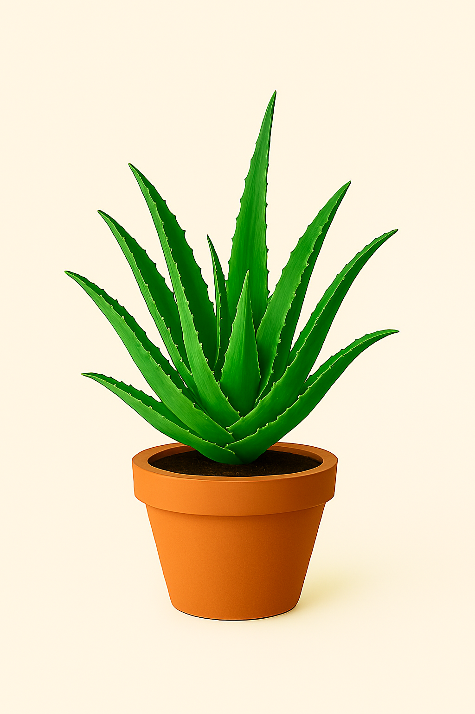
Aloe vera
Planta suculenta de hojas carnosas, alargadas y dentadas, con propiedades medicinales y cosméticas ampliamente reconocidas.
-
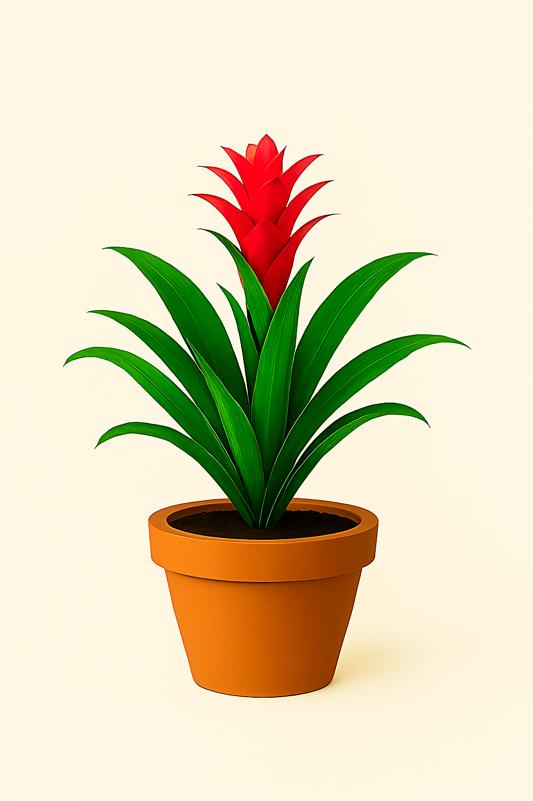
Bromelia
Planta tropical de gran impacto visual, con roseta central de hojas verdes alargadas y floración vibrante en tonos rojos, naranjas o rosados.
-
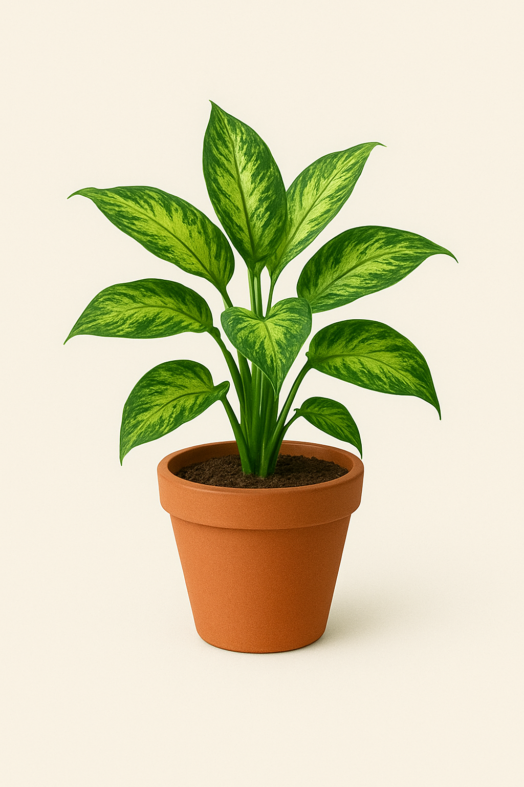
Calathea
Plantas con hojas llamativas con patrones verdes oscuros sobre fondo verde claro, simétricas y elegantes.
-
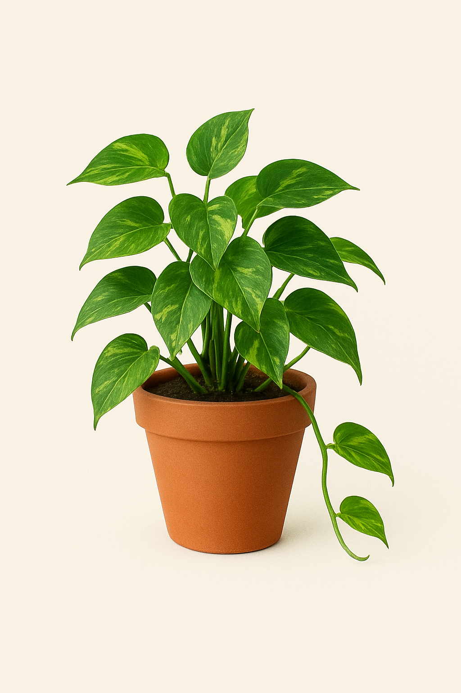
Enredadera
Enredadera perenne de follaje brillante, ideal para cubrir muros, pérgolas o alambrados con elegancia natural.
-
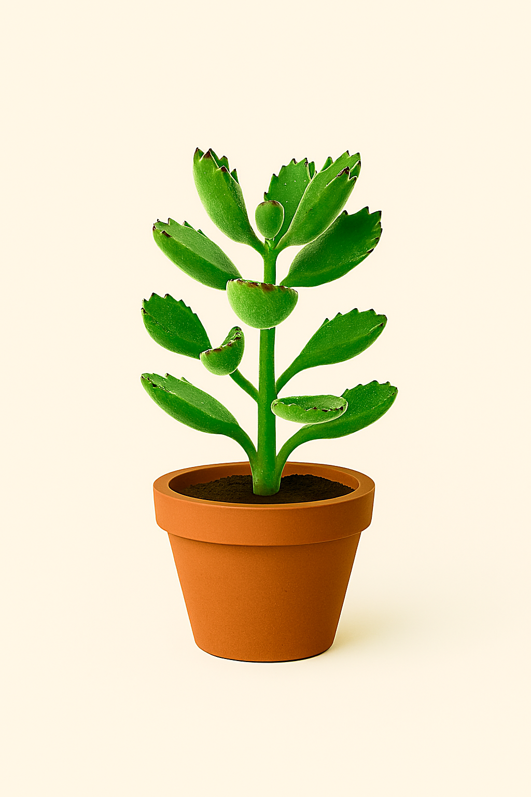
Garrita de oso
Suculenta compacta y de crecimiento lento, con hojas carnosas y pequeñas “uñitas” que recuerdan a patas de oso.
-
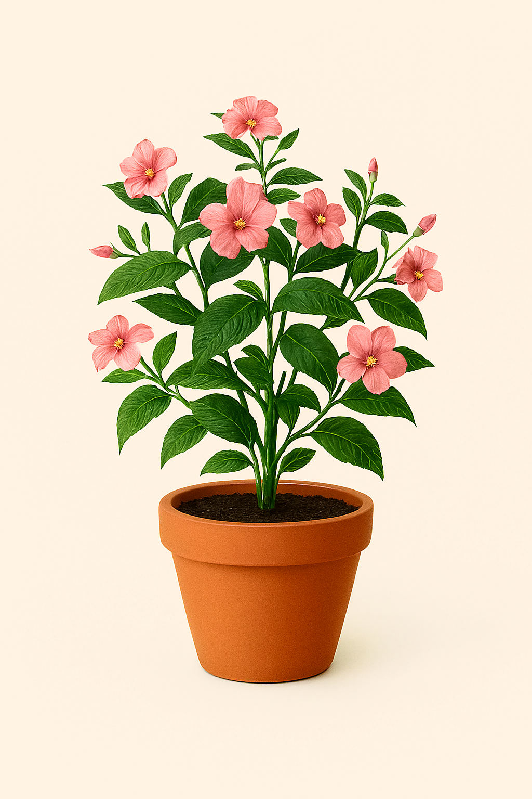
Impatiens rosada
Planta ornamental de interior o exterior, con flores suaves y redondeadas de color rosa intenso.
-
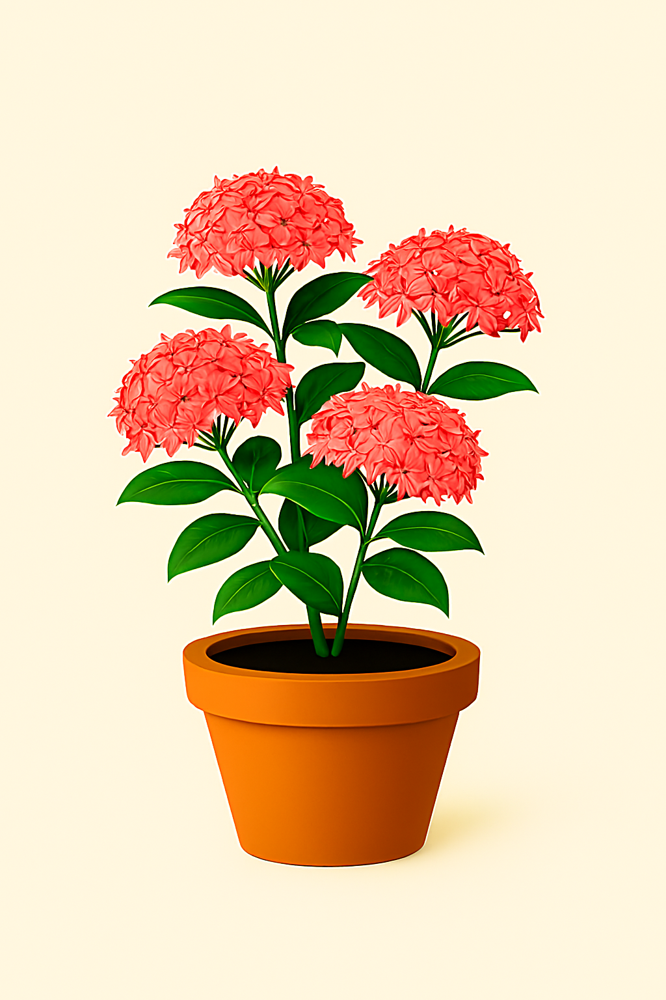
Ixora
Planta con racimos de pequeñas flores vibrantes, muy usada en jardines tropicales.
-
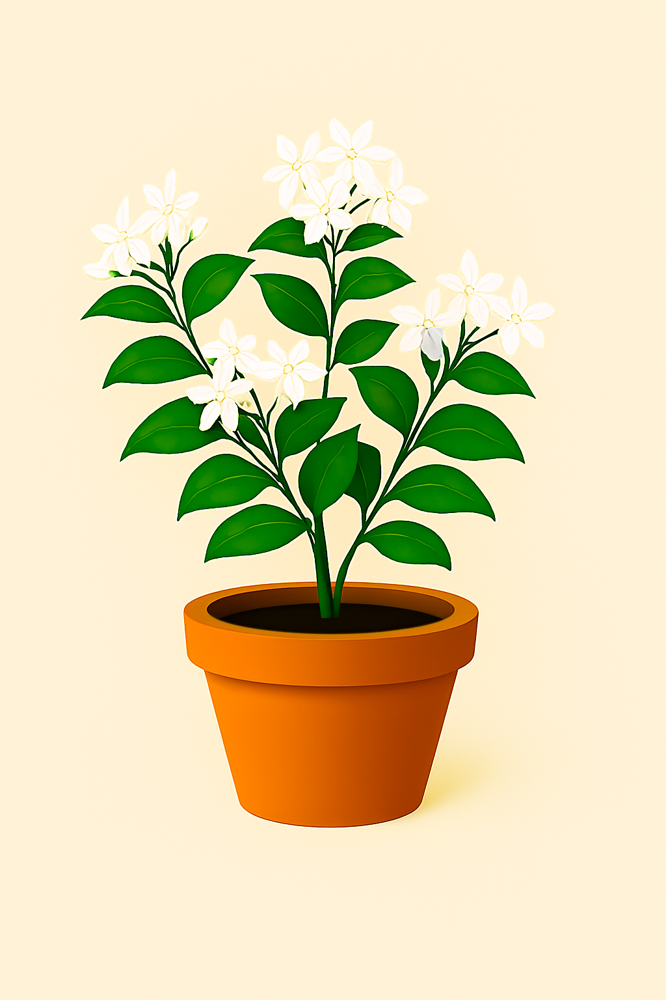
Jazmín
Planta trepadora o arbustiva de floración intensa, con flores blancas o amarillas y fragancia dulce y envolvente.
-
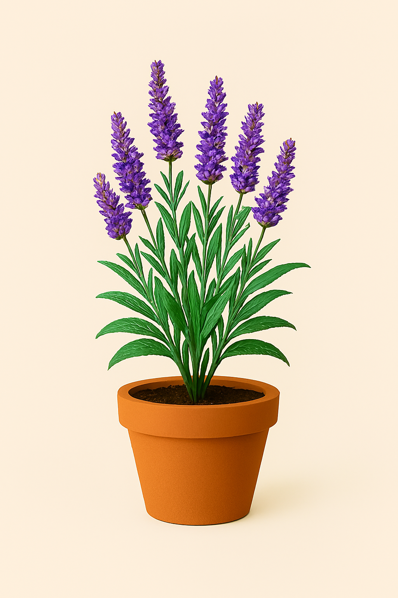
Lavanda
Planta aromática con espigas florales de color lavanda, que emana un aroma relajante y floral.
-
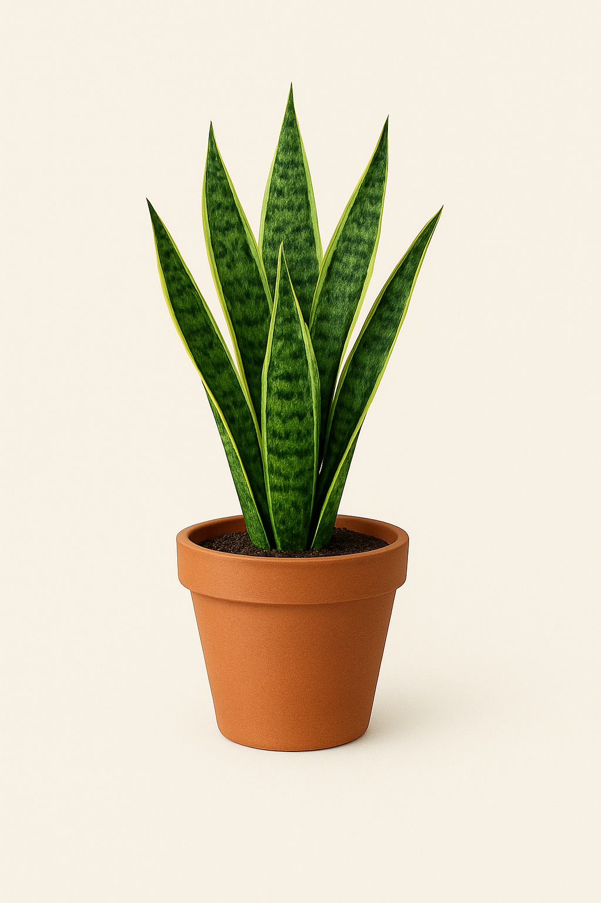
Lengua de suegra
Planta perenne de porte vertical, con hojas alargadas, rígidas y puntiagudas, con franjas verdes y bordes amarillentos.
-
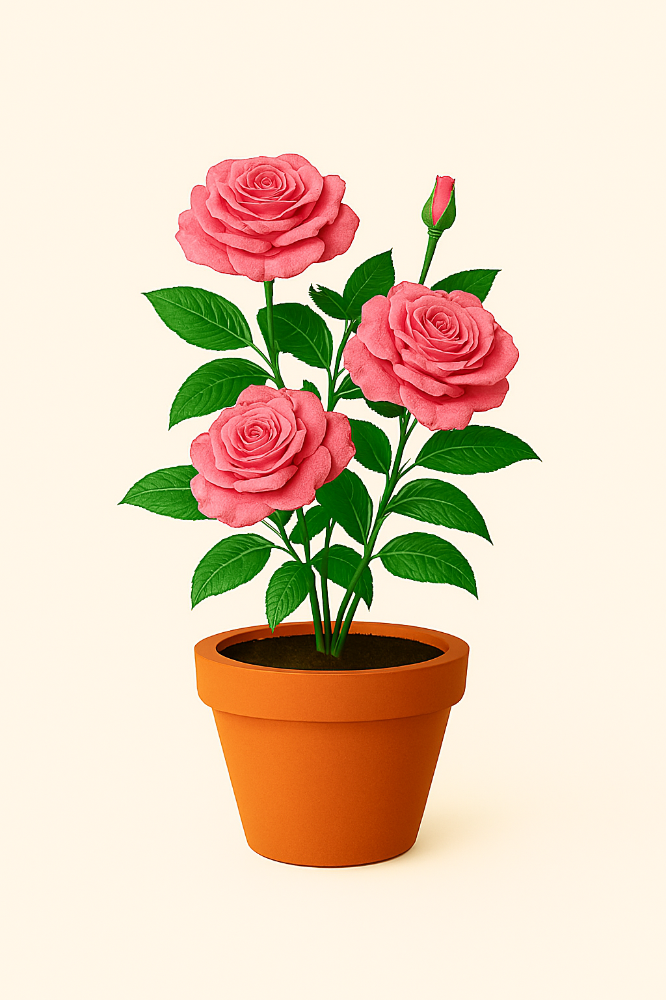
Rosal rosado
Planta ornamental de porte pequeño, ideal para interiores o balcones, con flores delicadas y románticas.
-
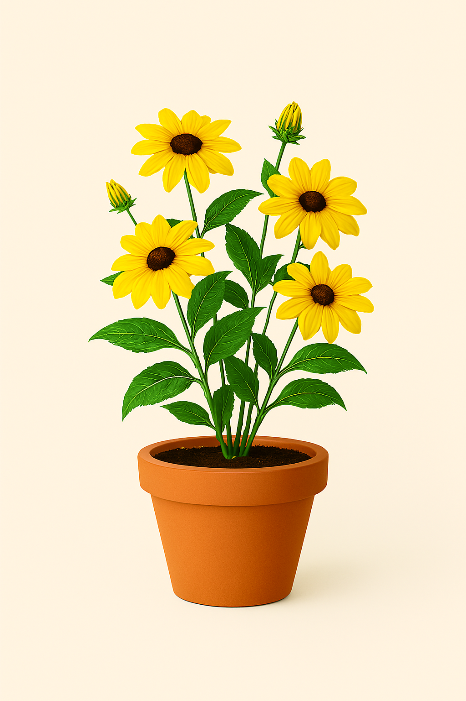
Susanita de ojos negros
Planta de floración abundante, con flores amarillas y centro oscuro, ideal para jardines soleados o balcones.